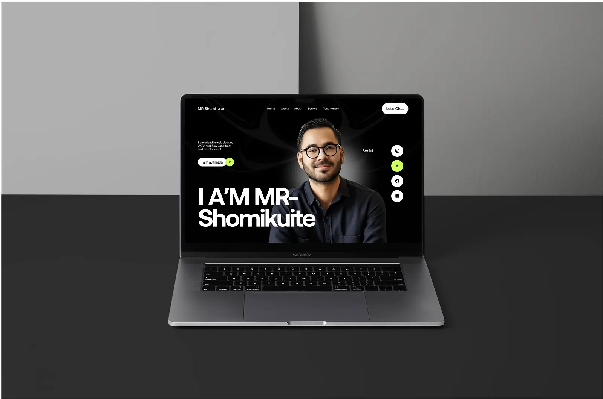
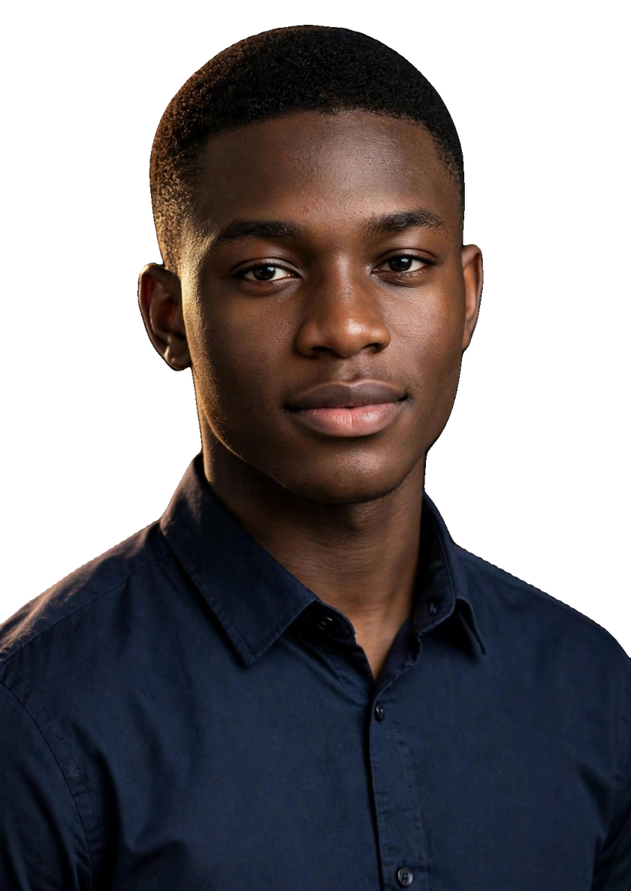

/ 01Platform
UniPath
University application platform for Nigerian applicants - 752 institutions and 18,280 courses, up to 3 selections per student, document uploads, admin and Monnify payments.
Next.js 16React 19SupabaseMonnify


👋 Hi I'm William Bassey
I'm a full-stack developer and data engineer who turns complex, real-world problems into clean, production-ready software. Currently a Data Analyst Intern at the Akwa Ibom State Internal Revenue Service (AKIRS) and a Computer Science student at the University of Uyo, I build systems that run at scale - from UniPath, a university platform with 752 institutions and 18,280 courses, to a taxpayer data cleaner now in production for a state revenue service. I specialise in Next.js, React, Supabase and Python, with a focus on speed, reliability and software built to last. Available for freelance work from $15/hr - based in Uyo, Nigeria, working remotely with clients worldwide.
Bassey William Mark - software developer, data engineer and ICT officer in Uyo, Akwa Ibom State, Nigeria. I am a Data Analyst Intern at the Akwa Ibom State Internal Revenue Service (AKIRS) and a Computer Science student at the University of Uyo.
Alongside that, I build and ship full products as a freelancer: UniPath for university applicants, the Companion academic portal, Smart Diary and Recall AI. I care about software that survives real users, real data and real phones.
Complete web applications, front to back - auth, dashboards, admin panels, payments and deployment. The stack behind UniPath.
Read MoreFast, responsive interfaces in Next.js and React that hold up on real phones and slow connections, not just office Wi-Fi.
Read MoreAPIs and server logic with FastAPI, Supabase and PostgreSQL - row level security, file uploads, review workflows and integrations.
Read MoreMessy CSV and Excel in, clean data out - duplicates removed, bank details verified, bad rows quarantined with reasons and a report.
Read MoreAsync scrapers and task queues that collect, reconcile and structure data from the web - the engine behind akirs-auto.
Read MoreNo percentages, no theatre - these are the tools I actually build and clean data with every week, across production systems at AKIRS and live products of my own. If a job needs a stack close to this, I can start fast.
Get In Touch NowCoursework:
University application platform for Nigerian applicants - 752 institutions and 18,280 courses, up to 3 selections per student, document uploads, admin and Monnify payments.
Taxpayer data cleaning for the Akwa Ibom State Internal Revenue Service - batch cleaning, validation, deduplication, NUBAN bank verification, quarantine for bad rows, analytics and reporting. Running in production.
Role-based academic portal for students, lecturers and course representatives - secure authentication, attendance, timetables, announcements, result access, academic profiles, directory lookup and an AI-powered campus assistant.
Secure, mobile-first digital diary - passcode authentication, journal profiles, mood tracking, calendar reminders and a private vault. Works offline, shipped to Android via Capacitor.
Intelligent screenshot memory manager - turns locally stored screenshots into a searchable, organised digital memory with local indexing, SQLite metadata and a tabbed interface. Fully offline.
Business prospecting tool built at AKIRS - an async web scraper for Akwa Ibom businesses with a task queue, database and migrations, two sources reconciled by vote, plus a chatbot over the scraped data running on a locally hosted AI model.
Emergency SOS app - home-screen widgets with pin buttons for SOS and check-ins, family billing, and alerts designed to work fast in a real emergency.
Have a product to build, a dashboard to fix, or data nobody wants to touch? Send a message - I reply fast, and I am happy to start with a small paid task so you can see the work first.